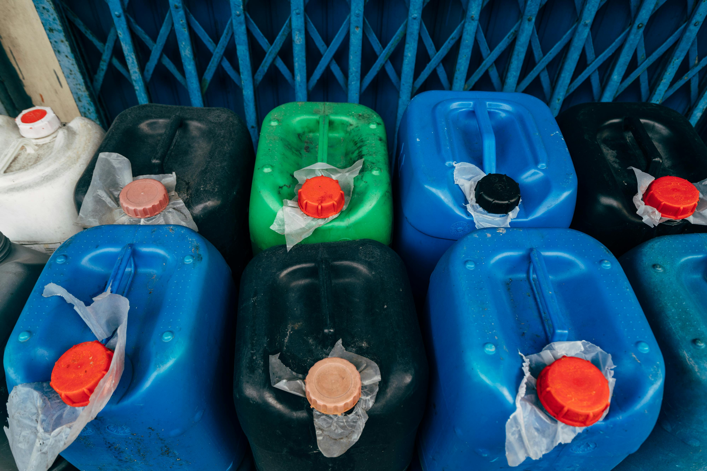

Compliance Guide
Small compliance gaps can become expensive problems when they are ignored.
Environmental compliance is not just about securing one permit and filing it away. For many facilities and projects, compliance involves screening the project correctly, understanding permit conditions, submitting monitoring reports, keeping records, and updating documents when operations change. When these details are missed, companies may face delays, corrective actions, penalties, or operational interruptions.
This guide highlights five common environmental compliance mistakes that companies make and practical ways to reduce the risk of those mistakes. It is written for project owners, facility managers, pollution control officers, administrative teams, and decision-makers who want a clearer picture of where compliance issues often begin.
1. Starting work without confirming ECC or CNC requirements
One of the earliest compliance risks happens before a project is fully implemented. Some project owners assume that their activity is too small, too routine, or too familiar to require environmental screening. Others proceed based on past experience with a different project, only to discover later that the new site, scale, process, or location has different requirements.
In the Philippines, the Environmental Management Bureau provides online screening tools and processes related to Environmental Compliance Certificate (ECC) and Certificate of Non-Coverage (CNC) requirements. The practical issue is not simply whether a company eventually secures a document. The issue is whether the project was screened early enough to avoid redesign, delays, or compliance findings later.
How to fix it: screen the project before construction, expansion, process changes, or major equipment installation. Keep a record of the screening basis, project description, location, capacity, and assumptions used. If the project changes, revisit the screening instead of assuming the original result still applies.
2. Treating ECC conditions as one-time paperwork
An ECC is often misunderstood as a document that only matters during approval. In practice, ECC conditions can create continuing commitments. These may relate to monitoring, reporting, mitigation measures, environmental management plans, stakeholder commitments, operating limits, or other project-specific requirements.
A common mistake is that the ECC is kept by one office or individual while the operations team, site personnel, contractors, or new managers do not fully understand the conditions attached to it. As staff change over time, the institutional memory weakens. The company may still have the permit, but not the system needed to comply with it.
How to fix it: translate permit conditions into a compliance register. List each requirement, responsible person, frequency, deadline, record needed, and proof of completion. Review the register during management meetings or project coordination meetings, especially before audits, renewals, expansions, and regulatory submissions.
3. Submitting late or incomplete monitoring reports
Monitoring reports are not just administrative attachments. They are one of the main ways a company demonstrates continuing compliance. Compliance Monitoring Reports and other required reports may include updates on environmental management commitments, monitoring results, compliance status, explanations for non-compliance, and corrective actions.
Problems usually occur when companies wait until the deadline before gathering data. Sampling results, laboratory reports, equipment maintenance logs, waste records, water use data, production data, and operating conditions may be scattered across departments. When the report is prepared late, it becomes easier to miss information or submit a document that does not clearly explain the facility’s actual compliance status.
How to fix it: set a reporting calendar at the start of the year. Assign data owners for each required input. Keep digital folders for permits, monitoring data, laboratory results, photos, manifests, correspondence, and previous submissions. Do not treat the report as a one-day task; treat it as a periodic documentation process.
4. Keeping weak hazardous waste records
Hazardous waste compliance can become complicated because it involves classification, storage, labeling, transport, treatment, disposal, manifests, and coordination with accredited or authorized service providers. Even companies with relatively small volumes of hazardous waste can run into problems if records are incomplete or inconsistent.
Typical gaps include missing manifests, unclear storage dates, mismatched quantities, outdated generator information, weak labeling, poor housekeeping in storage areas, and disposal records that are not easy to retrieve during inspections or audits.
How to fix it: maintain a hazardous waste log that tracks waste type, quantity, container, storage date, hauler, treatment/storage/disposal facility, manifest number, and final documentation. Store copies of relevant permits, registrations, service provider documents, and manifests in one controlled folder. Train personnel who generate or handle the waste, not only the person who submits the paperwork.

5. Overlooking air permits and operational changes
Facilities sometimes focus on land development, wastewater, or solid waste issues while overlooking equipment that may be considered an air pollution source. Boilers, generators, furnaces, process equipment, stacks, and control facilities may trigger air permitting or monitoring requirements depending on the situation.
Another common issue is change. A facility may add equipment, increase capacity, change fuel, modify operating hours, replace a unit, install a control device, or shift processes. If the compliance team is not informed early, permit updates or supporting documents may be missed.
How to fix it: include environmental review in procurement, engineering, and maintenance workflows. Before buying or installing equipment, ask whether it creates emissions, wastewater, hazardous waste, noise, odor, or other environmental concerns. Treat operational changes as compliance triggers, not just engineering decisions.
Practical compliance checklist
- Keep a current list of all environmental permits, registrations, and reporting obligations.
- Assign a responsible person and backup person for each compliance requirement.
- Maintain a calendar for monitoring, sampling, reporting, renewals, and inspections.
- Review ECC or CNC assumptions when project scope, location, capacity, or process changes.
- Store laboratory reports, manifests, photos, correspondence, and submissions in organized folders.
- Brief operations, maintenance, purchasing, and management teams on compliance triggers.
Compliance is easier when it is built into operations
Most environmental compliance problems do not begin with bad intentions. They often begin with unclear responsibility, late documentation, incomplete communication, or the belief that a permit is separate from daily operations. The better approach is to build compliance into project planning, procurement, operations, maintenance, and recordkeeping.
For companies handling multiple permits, project sites, reports, or environmental responsibilities, an outside technical review can help identify gaps before they become more difficult to correct.
Need help reviewing your environmental compliance requirements?
NBCS can help assess your current documents, reporting obligations, permits, and next steps so your team can move forward with a clearer compliance plan.
References
- DENR-EMB Online Screening for ECC Requirement Coverage / CNC Online Application
- DENR-EMB Compliance Monitoring System (CMR) Online
- DENR-EMB Hazardous Waste Management System
- DENR-EMB HWMS User Guides
- DENR-EMB Online Permitting and Monitoring System
- DENR-EMB Air Quality Management Section: OPMS Permit to Operate